Разновидности руды в игре
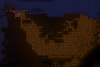Это различные минералы. Большинство могут быть найдены под землей или, очень редко, на поверхности. Другие же могут быть получены только при специальных условиях, таких как победа над боссом или после падения метеорита. Все руды участвуют в создании различных вещей и являются лучшей заменой деревянным инструментам. Вся руда блестит на свету, что упрощает ее нахождение среди слоев земли. Также можно использовать зелье шахтёра, которое подсвечивает месторождения всех руд, кроме адского камня. Почти все руды имеют альтернативу. Также можно получить руды, которых нет в вашем мире, дохардмодные с помощью перерабатывателя, хардмодные с помощью ящиков, вылавливаемых при рыбалке.
Перечисление руд
- Обычный режим (верхний ряд): медь, олово, железо, свинец, серебро, вольфрам, золото, платина, метеорит, демонит, кримонит, адская руда.
- Режим хардмод (нижний ряд): кобальт, палладий, мифрил, орихалк, адамантит, титан, хлорофит, люминит.
Типы руд
До хардмода
- 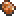Медь — самая первая руда, встречается повсеместно, даже на поверхности.
- 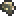Олово является альтернативой меди и немного лучше по характеристикам.
- 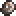Железо может залегать неглубоко под землей и редко на поверхности.
- 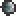Свинец является альтернативой железу и немного лучше по характеристикам.
- 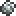Серебро встречается в пещерах, также может быть найдено под парящими островами.
- 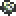Вольфрам в основном встречается под землёй и является альтернативой серебру.
- 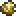Золото встречается глубоко под землей, очень редко на поверхности.
- 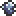Платина залегает там же, где и золото, соответственно альтернатива последнего. Как и перечисленные выше руды может быть добыта даже медной киркой.
- 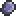Демонит падает с Глаза Ктулху и Пожирателя миров в мирах с Искажением. Иногда можно найти под землей в очень малых количествах (1-7), она светится, что упрощает ее нахождение. Добывается золотой киркой и лучше.
- 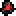Кримонит падает с Глаза Ктулху и Мозга Ктулху в мирах с Кримзоном. Является альтернативой демониту, соответственно немного лучше по характеристикам. Иногда можно найти под землей в очень малых количествах (1-5), она светится, что упрощает ее нахождение. Добывается золотой киркой и лучше.
- 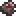Метеоритная руда добывается из метеорита и наносит урон игроку при прикосновении, накладывая на игрока дебафф Горение, пока не будет надет обсидиановый череп или вещи сделанные из него. Если вблизи игрока есть 50 или более блоков метеорита начинают спавниться метеоритные головы. Добывается вольфрамовой киркой и лучше.
- 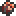Адский камень находится глубоко в Аду. Как и метеоритная руда, накладывает на игрока дебафф Горение; избежать урона можно такими же способами. Добывается кошмарной киркой или лучшей. После добычи оставляет за собой полблока лавы, но если уже добытый блок руды поставить, а потом опять сломать, то лавы не будет.
В хардмоде
- 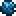Кобальт появляется после перехода игры в режим хардмода после разрушения первого демонического алтаря. Добывается адской киркой или лучше.
- 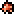Палладий может быть сгенерирован вместо кобальта при разрушении демонического алтаря, соответственно альтернатива последнего. Добывается адской киркой или лучше.
- 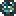Мифрил также является хардмод-рудой. Появляется после разрушения второго демонического алтаря. Добывается кобальтовым буром (киркой) и лучше.
- 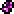Орихалк является заменой мифрилу, генерируется при разрушении второго демонического алтаря, соответственно альтернатива последнего. Добывается кобальтовым буром (киркой) и лучше.
- 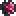Адамантит появляется после разрушения третьего демонического алтаря. Добывается мифриловым буром (киркой) и лучше.
- Титан может возникнуть вместо адамантита при разрушении третьего демонического алтаря, соответственно альтернатива последнего. Добывается мифриловым буром (киркой) и лучше.
- 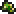Хлорофит встречается глубоко в джунглях в хардмоде, добывается буропилом (киркопором) и лучше.
- 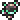Люминит — самая лучшая руда в игре. Не встречается в мире в виде залежей, можно получить только в качестве дропа с Лунного лорда. С помощью нее создаётся лучшая броня и самые мощные инструменты в игре. Может быть разрушена любой киркой после размещения.